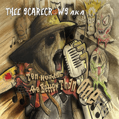

Thee Scarecrows AKA - Ten Heads Are Better Than One (MiniAlbum, 2017)
01 - Ten Heads Are Better Than One (3:40)
02 - Somebody's Diggin' My Potatoes (3:03)
03 - Scarecrow Man (3:05)
04 - You Got Your Head On Backward Baby (3:16)
05 - Straw Headed Man (1:37)
06 - Hey Ho, Let's Hoe (3:52)
© Rub-A-Chicken Records :: [3310/RUBACD002]
Notes
United Kingdom, England.
All songs and lyrics by Thee Scarecrows AKA except "Somebody's Diggin' My Potatoes" (Traditional) and "You Got Your Head On Backwards Baby" (Gerald Roslie)
reference information: Discogs®
Review
007/366 (Project 366)
Rollin'! Shoot! Rockin' roll. Let us roll, swampy band! Heavy rhythm uh-oh, scratching a lot. Rustic stoner country hop! Harp tune, raw sound, lyrical story and hard voice. The wildest scarecrows on the farm. Title track "Ten Heads Are Better Than One" with sweet greasy hard swirling. Topnotch work and definitely desire to diggin' the beat. While there is a "Somebody's Diggin' My Potatoes" in second track. Still rolling and maybe stomp in duple time. Twirling hilly tone and harmonica sound pretty. Much more rustic and close to Garage Rock'N'Roll. Well.. Barn Rock'N'Roll! Or just bothy roll. A ballad about a real clapper story! Swamped overload. Romp, stomp, romp. Tasty.
The third song "Scarecrow Man" is practically the hymn of their band. This is one more hard and heavy rockabilly ballad. The sensations are super. Ride and sharply on the brakes, drift, shift! And again on the gas! Gurgling sound is so pretty. Wiggling shake! Bump, use strings to tease and crawling on bustle. And, by the way, what a lovely hoarse vocals. Next song "You Got Your Head On Backwards Baby" with start the engines. This is a wonderful, and then scatter rock with strolling. Naughty prowess. Wild rural Rock'N'Roll. Loudly, explosive, powerful! Fifth track "Straw Headed Man" goes country rock'n'roll dance! If you even could do the pace enough! Raspy rush quenched thirst. Sixth track "Hey Ho, Let's Hoe!" is a cool end of the mini album. Stylish, roll, picky and finally catchy! Hey Ho! Wild wild.. humming roar for rockers. Stinging growl for all. It is interesting to imagine what is happening on the dance floor. Just an emotional outburst, a flash from the rhythm and motive. Great (over)balanced sound. Good promise. Rockin' and rollin' sound with flows of psycho Rockabilly. A distinctive feature is the presence of very curious musical instruments.
Steady and quality mini-album with a lot of highlights. With an unusual sound of music and with perfect voice. Floating between psycho tunes, gruff sound and charm of ranches, farms, country fields. With lovely wailing tone and swampy atmosphere. Practically each move sharpens the tunes. Sharpened melodies are so cleverly mad. Furthermore, an interesting concept that is used throughout. From the name of the bands, songs, aliases of musicians and look of costumes to the sound itself. Farm thriller.. A real scarecrow's craze!